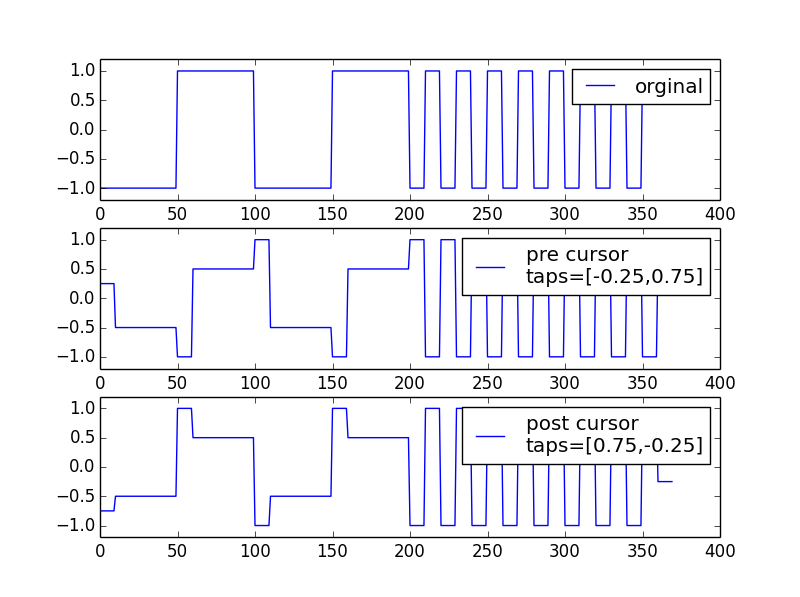

均衡器¶
预加重(Pre-emphasis)¶
几个概念先了解一下
Pre-emphasis vs De-emphasis¶
在FM通信系统中，Pre-emphasis表示提高高频分量的增益， De-emphasis系统中表示 衰减高频分量增益。如下图，可以分别看成是高通和低通滤波器，而且是相互抵消的关系1。
但在高速数字通信系统中，二者没有本质的区别，唯一的区别是系数的绝对值之和 是否比1大，比1大就是Pre-emphasis，意味着peak-peak swing比原先的波形大， 比1小就是De-emphasis意味着peak-peak swing比原先的波形小。
下图假定数据速率为5Gbps,其Nyquist频率为2.5GHz. 2者的曲线没有本质区别， 之后一个垂直方向的偏差。
- 红色的曲线系数为[1.5,-0.5],其DC增益为0dB，但是Nyquist频率处增益为6dB
- 蓝色色的曲线系数为[0.75,-0.25],其DC增益为-6dB，但是Nyquist频率处增益为0dB

其Python源代码如下：
import numpy as np
import matplotlib.pyplot as plt
from scipy import signal
data_rate = 5 #Gbps
taps = [0.75,-0.25]
taps2 = np.array( [0.75,-0.25])*2
w,h = signal.freqz(taps)
plt.plot(w/np.pi*2.5, 20 * np.log10(abs(h)), 'b',label="de-emphasis")
w,h = signal.freqz(taps2)
plt.plot(w/np.pi*2.5, 20 * np.log10(abs(h)), 'r',label="pre-emphasis")
plt.ylabel('Amplitude [dB]', color='b')
plt.xlabel('Frequency (GHz)')
plt.grid()
plt.legend(loc="best")
plt.show()Pre-emphasis几种不同的名称¶
这几个概念完全等同，Pre-emphasis本质就是FIR滤波，也称为FFE前方反馈滤波器， 在DSP算法中，可以用卷积实现。
这个容易理解，tap就是FIR滤波器的系数。
Pre cursor 和 post cursor的区别，是tap相对于main tap的位置。
以2个tap为例，比如系数为[-0.25,0.75]，表示1个tap的pre cursor，值为-0.25。 系数为[0.75，-0.25]，表示1个tap的post cursor，值为-0.25。
以三个tap的系数[-0.131,0.595,-0.274]， 最大的0.595为main tap, -0.131为pre cursor -0.274为post cursor
下图表示出了channel response中cursor的位置

dB和tap之间的关系¶
这个也是很容易混淆的概念，很多业界标准如PCI-E GEN2中规定了-3.5dB,6dB 均衡器。 下图是USB3.0标准中关于EQ系数和dB之间的关系。
从图中不难看出:
- de-emphasis是受post cursor控制
- pre-shoot 是受pre cursor控制
- 需要长 0 或者 长 1 pattern才能看出de-emphasis/pre-shoot效应

下面可以做一个简单的计算，如果tap系数为[0.75,-0.25],这表明$C_{-1}=0$, $C_{0}=0.75$,$C_{1}=-0.25$ 带入公式得到:
$$ deemphasis = 20log_{10}\left(\frac{C_{-1}+C_0+C_1}{C_{-1}+C_0-C_1}\right) = 20log_{10}\left(\frac{0+0.75-0.25}{0+0.75-0.25}\right) =-6dB $$
下面为pre-emphasis代码Python实现的方法演示，其中用到了卷积来实现。
import numpy as np
import matplotlib.pyplot as plt
pattern = [-1,-1,-1,-1,-1,1,1,1,1,1,-1,-1,-1,-1,-1,1,1,1,1,1,-1,1,-1,1,-1,1,-1,1,-1,1,-1,1,-1,1,-1,1]
taps_pre = [-0.25,0.75]
taps_post = [0.75,-0.25]
sa_per_ui = 10
wave_orig = np.repeat(pattern,sa_per_ui)
wave_pre = np.zeros((len(pattern)+len(taps_pre)-1)*sa_per_ui)
for i in range(sa_per_ui):
wave_pre[i::sa_per_ui] = np.convolve(wave_orig[::sa_per_ui],taps_pre)
wave_post = np.zeros((len(pattern)+len(taps_post)-1)*sa_per_ui)
for i in range(sa_per_ui):
wave_post[i::sa_per_ui] = np.convolve(wave_orig[::sa_per_ui],taps_post)
plt.subplot(311)
plt.plot(wave_orig,label="orginal")
plt.ylim([-1.2,1.2])
plt.legend()
plt.subplot(312)
plt.plot(wave_pre,label="pre cursor\ntaps=[-0.25,0.75]")
plt.ylim([-1.2,1.2])
plt.legend()
plt.subplot(313)
plt.plot(wave_post,label="post cursor\ntaps=[0.75,-0.25]")
plt.ylim([-1.2,1.2])
plt.legend()
plt.show()下图是代码输出的图片
